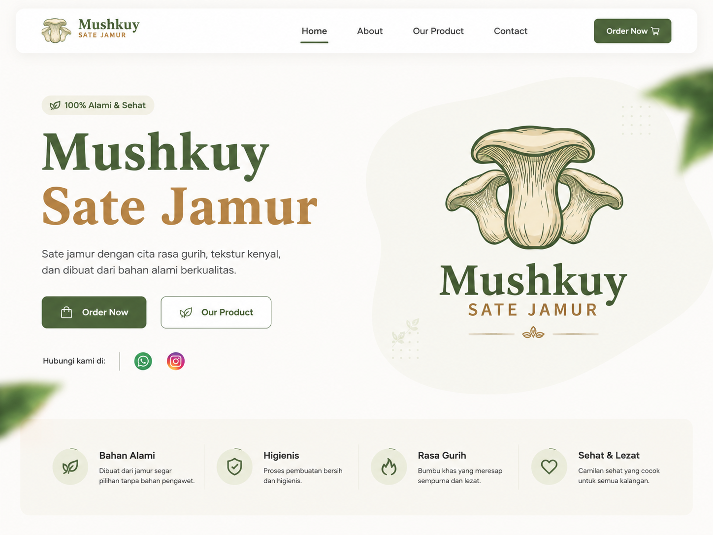

01
01
Laptop & Computer Repair
Laptop and computer repair services including deep cleaning, thermal paste replacement, RAM & SSD upgrades, as well as hardware and software troubleshooting to boost overall device performance.
 02
02
Network Switch Replacement
Freelance project replacing a 24-port network switch at a state-owned bank. Covered downtime planning, configuration migration, device installation, connectivity testing, and network documentation.

03UMKM Sate Jamur — Web Profile
Business profile website built for a local mushroom satay food stall. Features menu, product gallery, location, and contact info. Designed with a modern, responsive layout to strengthen the business's digital presence.
2023 — Present
Freelance Graphic Designer
ITO DESIGN
Creating visual identities, branding materials, and digital design assets for various clients. Specializing in logo design, poster creation, and social media graphics.
2024 — Present
Freelance Computer Technician
Computer & Laptop Maintenance
Providing computer and laptop repair services including hardware troubleshooting, OS installation, performance optimization, and component upgrades for individual and small business clients.
2026 — Present
IT Vendor / Freelance IT Support
Network & Hardware Services
Handling network setup, hardware configuration, and IT infrastructure support for clients. Tasks include network cable installation, router configuration, and general IT consultation.